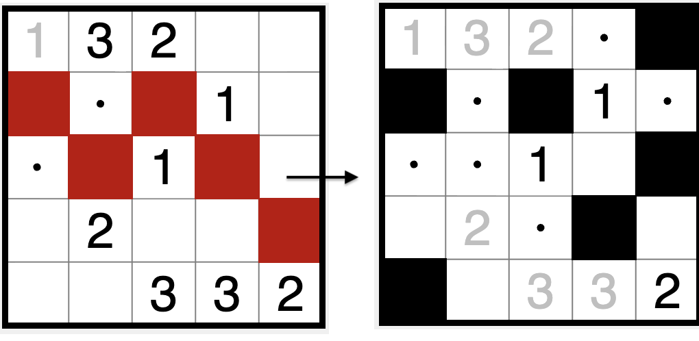
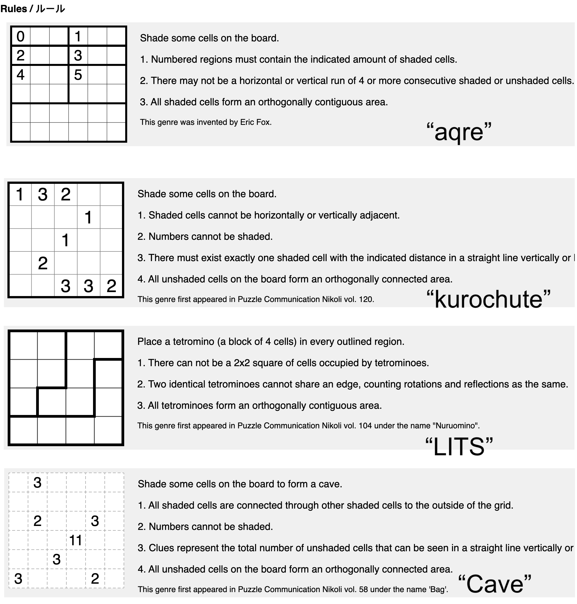
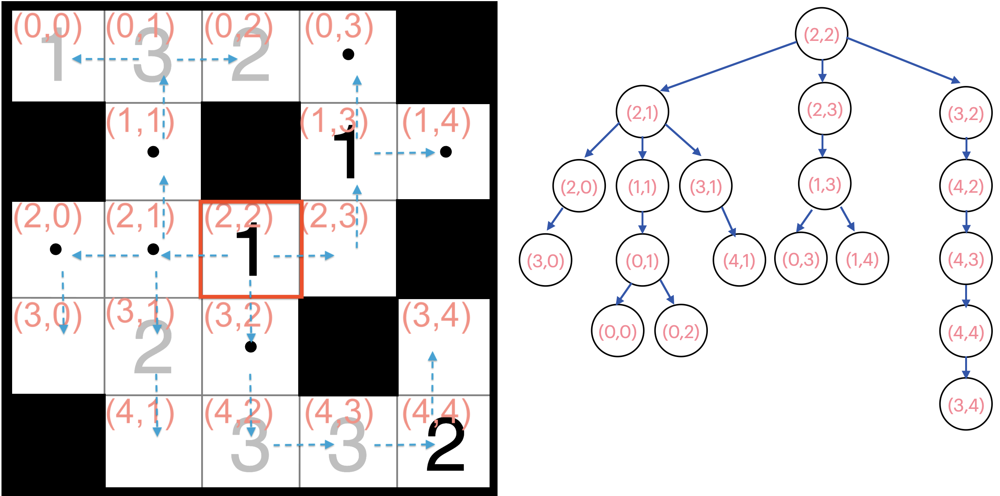
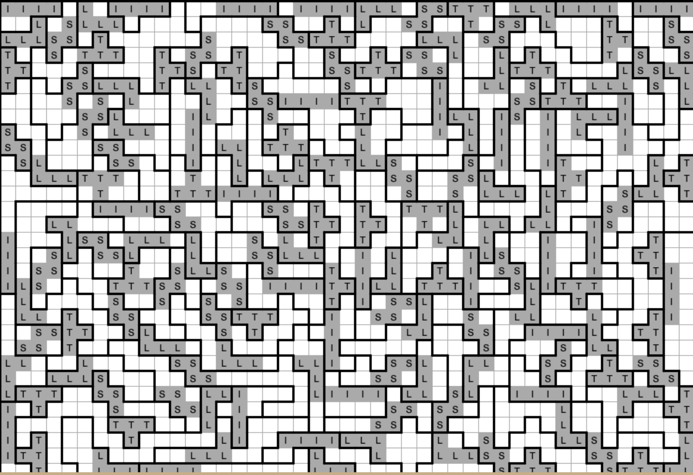
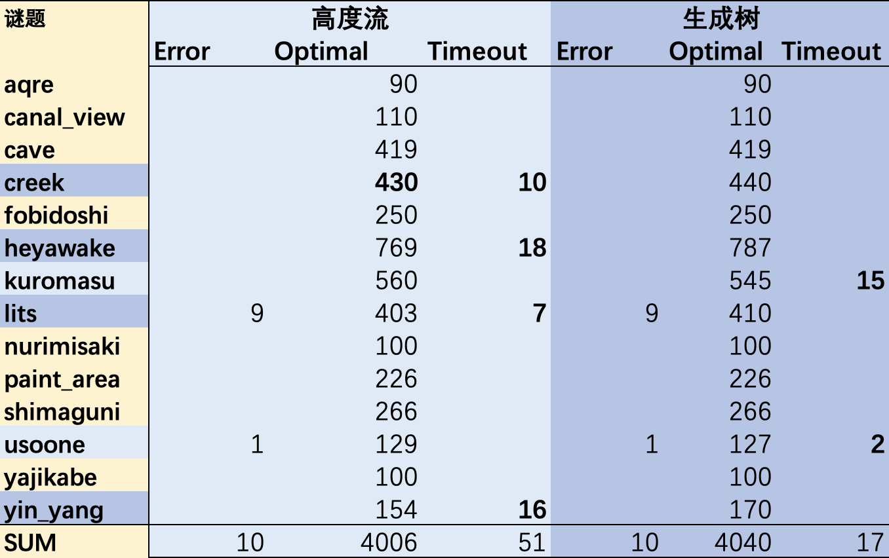
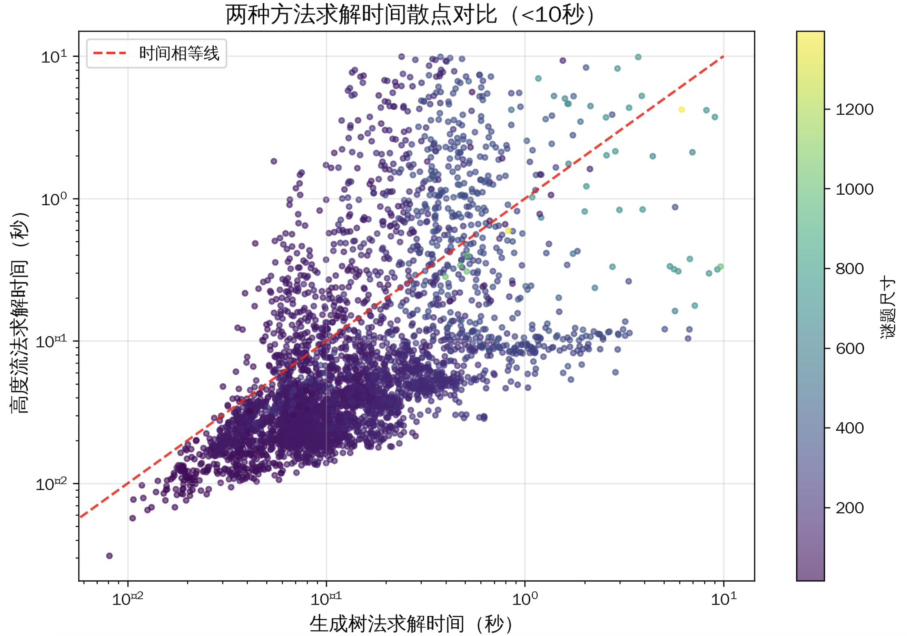
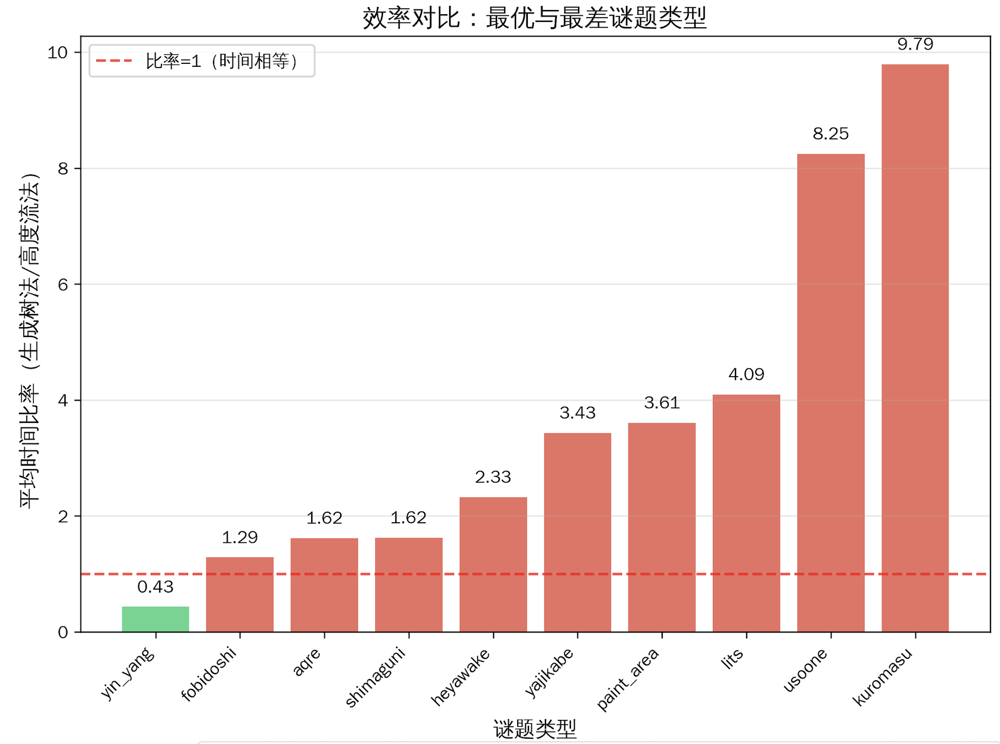
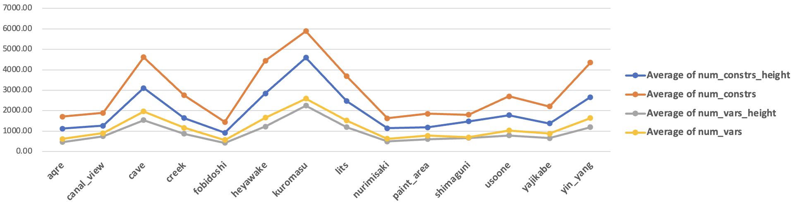

解谜｜涂色类逻辑谜题连通性约束的两种表示方法及性能对比
什么是连通性约束
在许多逻辑谜题中，连通性约束（Connectivity Constraint）要求某个特定类型的所有单元格（涂黑的/未涂黑的/包含数字的等）形成一个单一连通区域。换句话说，从该集合中的任意一个元素出发，都可以通过相邻元素，到达集合中的任意其他元素。

这里的“相邻”，主要分“正交相邻(Orthogonal，上下左右四方向)”和“对角线相邻(Diagonal，上下左右以及对角线方向)”。以上图为例，如果是正交相邻，左侧盘面的白色格被红色格子分割所以不连通，右侧盘面白色格连通；
如果是对角线相邻，左右侧的白色格均为连通的，但是右侧的黑色格在任何相邻情况下都不连通。
典型谜题场景
连通性是一个全局约束（Global Constraint），它不能简单地通过局部条件来表达。利用可满足性SAT求解器进行解算的时候，我们需要将这个全局性质编码为一组局部约束的组合，同时保证：
- 正确性：满足约束的解一定是连通的
- 完备性：所有连通解都能被找到
- 效率：约束数量可控，求解器能够高效处理

我们可以在一长串谜题中找到“连通性”约束：Aqre, Canal View, Cave, Creek, LITS, Heyawake, Nurimisaki, Shimaguni ...
数学表示
给定一个网格图 \(G = (V, E)\)，其中：
- \(V\) 是单元格（或节点）的集合，也就是点；
- \(E\) 是相邻关系的集合，（通常为正交相邻），也就是边；
连通性约束要求：集合 \(S = \{v \in V \mid x_v = 1\}\) 诱导的子图 \(G[S]\) 是连通的。
我们把“需要连通”统一用“是否激活”而不是“涂黑”来描述。这是因为不同谜题中，对于“什么样的子图应该是连通的”有不同的条件：
- Kuroshute 和 Nurimisaki中，未涂黑的格子应该是连通的；
- 在Aqre, Canal View, LITS 这类谜题中，涂黑的格子应该是连通的；
- 在 yin-yang 中，黑圈和白圈格子都要是连通的；
一般地，我们只需要规定“符合某条件的格子被激活”，就能分别表述这些杂七杂八的情况了。
静态的洪水泛滥法 + 高度流法
一种常见的方法是洪水泛滥思路：从唯一根节点向外传播连通性信号，用高度变量替代传统迭代式洪水填充，比如每一个节点的高度，都等于相邻的最大高度 - 1；
核心规则：
- 选规范根（字典序第一个活跃节点，对称性破缺）
- 根的高度设为最大值 \(|V|\)
- 活跃节点高度 = 相邻最大高度 - 1
- 非活跃节点高度 = 0
- 活跃节点高度必须 > 0（保证连通到根）
对于每个节点 \(v \in V\)：
- \(x_v \in \{0, 1\}\)：节点 \(v\) 是否为活跃节点（未涂黑，输入变量）
- \(h_v \in \{0, |V|\}\)：节点 \(v\) 的高度
- \(\text{is\_root}_v \in \{0, 1\}\)：节点 \(v\) 是否为规范根
- \(\text{prefix\_zero}_v \in \{0, 1\}\)：辅助变量，表示「之前所有节点都不活跃」
- \(H^{\max}_v \in \{0, |V|\}\)：\(v\) 邻居中的最大高度
| 约束公式 |
约束作用（核心含义） |
| 1. 规范根递归定义 |
按顺序定义「前缀全不活跃」，锁定第一个活跃节点为根 |
| 2. \(\sum is\_root_v ≤ 1\) |
强制最多一个规范根（对称性破缺） |
| 3. \(H^{\max}_v = \max\{h_u\}\) |
计算节点邻居的最大高度 |
| 4. \(is\_root_v ⇒ h_v = \|V\|\) |
根节点高度设为最大值 |
| 5. \((x_v ∧ ¬is\_root_v) ⇒ h_v = H^{\max}_v -1\) |
活跃节点高度逐级递减 |
| 6. \(¬x_v ⇒ h_v = 0\) |
非活跃节点高度清零 |
| 7. \(x_v ⇒ h_v > 0\) |
所有活跃节点必须连通到根 |
| 指标 |
数量级 |
说明 |
| 布尔变量 |
\(O(V)\) |
is_root + prefix_zero 变量（无父节点变量） |
| 整数变量 |
\(O(V)\) |
节点高度 + 邻居最大高度变量 |
| 约束数量 |
\(O(V + E)\) |
节点约束 + 邻域最大高度计算 |
| def add_connected_subgraph_by_height(
model: cp.CpModel,
active_nodes: Dict[Hashable, cp.IntVar],
adjacency_map: Dict[Hashable, List[Hashable]],
prefix: str = 'graph'
) -> Tuple[Dict[Hashable, cp.IntVar], Dict[Hashable, cp.IntVar]]:
"""
Enforce that the set of nodes where active_nodes[n] is True forms a single
connected component.
This implementation uses the "Canonical Root + Height Flow" method, which is
significantly faster for large/sparse grids than the Spanning Tree method.
Args:
model: The OR-Tools CpModel.
active_nodes: Mapping from node identifier to its BoolVar.
adjacency_map: Pre-computed neighbor list for each node.
Format: {node: [neighbor_node_1, neighbor_node_2, ...]}
prefix: Prefix of string to avoid duplicated variable names.
Returns:
(node_height, is_root): Dictionaries of internal variables for debugging/visualization.
node_height replaces the 'rank' from the old implementation.
"""
# 1. Prepare Nodes
# We must convert dict keys to a list to ensure a deterministic order for the
# canonical root selection logic.
nodes = list(active_nodes.keys())
num_nodes = len(nodes)
# Tiny optimization: 0 or 1 active node is trivially connected.
if num_nodes <= 1:
return {}, {}
# 2. Define Variables
is_root: Dict[Hashable, cp.IntVar] = {}
prefix_zero: Dict[Hashable, cp.IntVar] = {}
node_height: Dict[Hashable, cp.IntVar] = {}
max_neighbor_height: Dict[Hashable, cp.IntVar] = {}
for n in nodes:
is_root[n] = model.NewBoolVar(f"{prefix}_is_root_{n}")
# Height ranges from 0 to num_nodes
node_height[n] = model.NewIntVar(0, num_nodes, f"{prefix}_height_{n}")
max_neighbor_height[n] = model.NewIntVar(0, num_nodes, f"{prefix}_max_nh_{n}")
# 3. Canonical Root Selection (Symmetry Breaking)
# The Root MUST be the *first* active node in the ordered list 'nodes'.
# prefix_zero[i] is True iff ALL previous nodes in the list are Inactive.
prev_n = None
for n in nodes:
b = model.NewBoolVar(f"{prefix}_prefix_zero_{n}")
prefix_zero[n] = b
if prev_n is None:
# First node: prefix_zero is always True (no predecessors)
model.Add(b == 1)
else:
# Recursive: prefix_zero[n] <-> prefix_zero[prev] AND NOT active[prev]
ortools_and_constr(model, b, [prefix_zero[prev_n], active_nodes[prev_n].Not()])
prev_n = n
# Link is_root: Can only be root IFF (Active AND prefix_zero)
for n in nodes:
ortools_and_constr(model, is_root[n], [active_nodes[n], prefix_zero[n]])
# At most one root (it ensures single component logic)
model.Add(sum(is_root.values()) <= 1)
# 4. Height Propagation (Sink-based Flow)
for n in nodes:
# Filter neighbors: only consider those that are part of the active_nodes set
# (Adjacency map might contain nodes not currently involved in this subgraph constraint)
raw_neighbors = adjacency_map.get(n, [])
valid_neighbors = [nbr for nbr in raw_neighbors if nbr in node_height]
neighbor_heights = [node_height[nbr] for nbr in valid_neighbors]
# Calculate Max Neighbor Height
if neighbor_heights:
model.AddMaxEquality(max_neighbor_height[n], neighbor_heights)
else:
model.Add(max_neighbor_height[n] == 0)
# Rule A: Active Node, NOT Root -> Height = Max_Neighbor - 1
model.Add(node_height[n] == max_neighbor_height[n] - 1).OnlyEnforceIf(
[active_nodes[n], is_root[n].Not()]
)
# Rule B: Root Node -> Height = num_nodes (Source of flow)
model.Add(node_height[n] == num_nodes).OnlyEnforceIf(is_root[n])
# Rule C: Inactive Node -> Height = 0
model.Add(node_height[n] == 0).OnlyEnforceIf(active_nodes[n].Not())
# 5. Final Connectivity Check
# If a node is active, it MUST be able to trace a path of heights back to the Root.
# Therefore, its height must be > 0.
for n in nodes:
model.Add(node_height[n] > 0).OnlyEnforceIf(active_nodes[n])
# Return matched signature variables
# node_height functionally replaces the old 'rank'
return node_height, is_root
|
生成树法 (Spinning Tree Method)
我们把这些谜题的格子以及相邻关系构成的图抽象成一个无向图。一个观察是：这里的激活点集连通当且仅当它存在一棵生成树。这引出了第一种编码方法的核心思想。
定理：设 \(S\) 是非空点集，则 \(G[S]\) 连通 \(\iff\) 存在以 \(S\) 中节点为顶点的树 \(T\)，使得：
- \(T\) 的所有顶点都在 \(S\) 中
- \(T\) 的每条边都对应 \(G\) 中的边
- \(S\) 中的每个节点都在 \(T\) 中
我们引入秩（rank）变量和父节点选择变量，强制选中的节点形成一棵有根树。
实际求解的时候，部分谜题（如Shimaguni）存在全部格子涂黑、无活跃节点的边界场景，此时如果强制命令‘必须有一个根结点’，求解器内部会因为无法确定谁为root而报Infeasible。这边的解决方案是对根节点约束做了动态优化：有活跃节点时强制唯一树根，无活跃节点时自动取消根节点约束。
对于每个节点 \(v \in V\)：
- \(x_v \in \{0, 1\}\)：节点 \(v\) 是否被激活；
- \(r_v \in \{0, |V|\}\)：节点 \(v\) 在树中的秩/深度
- \(\text{is_root}_v \in \{0, 1\}\)：节点 \(v\) 是否为树根
- \(p_{v,u} \in \{0, 1\}\)：节点 \(u\) 是否为节点 \(v\) 的父节点（对于每个邻居 \(u \in N(v)\)）
举个例子，对于如下左的Kuroshute谜题（要求白格连通），此时以 (2,2) 位置为根，按照一定策略生成一棵树（树的形状不唯一，此为示例），那么这一棵树就是如右图所示的样子。通过引入秩（rank）变量和父节点选择变量，强制选中的节点形成一棵有根树。

| 约束公式 |
约束作用（核心含义） |
| 1. 有活跃节点时 \(\sum is\_root_v = 1\)；无活跃节点时 \(\sum is\_root_v = 0\) |
动态约束根数量：有节点则唯一根，
无节点则无根 |
| 2. \(is\_root_v \Rightarrow x_v, \forall v\) |
根节点必须是激活的有效节点 |
| 3. \(\neg x_v \Rightarrow (r_v = 0 \land is\_root_v = 0)\) |
非激活节点没有秩、
禁止成为根节点 |
| 4. \(is\_root_v \Rightarrow r_v = 0\) |
根节点的秩固定为 0 |
| 5. \((x_v \land \neg is\_root_v) \Rightarrow r_v ≥ 1\) |
活跃的非根节点秩至少为 1 |
| 6. \(p_{v,u} \Rightarrow (x_u \land r_v = r_u + 1)\) |
父节点必须活跃，子节点秩严格比父节点大 1 |
| 7. \((x_v \land \neg is\_root_v) \Rightarrow \sum_{u∈N(v)} p_{v,u} = 1\) |
活跃非根节点必须有且仅有一个父节点 |
| 8. \((is\_root_v \lor \neg x_v) \Rightarrow \sum_{u∈N(v)} p_{v,u} = 0\) |
根节点、非活跃节点没有父节点 |
参考代码如下：
| def add_connected_subgraph_constraint(
model: cp.CpModel,
active_nodes: Dict[Hashable, cp.IntVar],
adjacency_map: Dict[Hashable, List[Hashable]],
prefix: str = 'graph'
):
"""
Enforce that the set of nodes where active_nodes[n] is True forms a single
connected component (a Tree).
Assumption: The subgraph contains at least one active node (otherwise Unsat).
Args:
model: The OR-Tools CpModel.
active_nodes: Mapping from node identifier (Token/Position) to its BoolVar.
adjacency_map: Pre-computed neighbor list for each node.
Format: {node: [neighbor_node_1, neighbor_node_2, ...]}
prefix: Prefix of string to avoid duplicated variable names.
"""
nodes = list(active_nodes.keys())
num_nodes = len(nodes)
# 1. Variables
# rank[u]: Depth/Order in the tree. 0 if root or inactive.
rank = {n: model.NewIntVar(0, num_nodes, f"rank_{n}_{prefix}") for n in nodes}
# is_root[u]: True if node u is the root of the tree.
is_root = {n: model.NewBoolVar(f"is_root_{n}_{prefix}") for n in nodes}
# 2. Global Constraints
# - There must be exactly one structure root.
# - The root must be an active node.
total_active = model.NewIntVar(0, num_nodes, f"total_active_{prefix}")
has_active = model.NewBoolVar(f"has_active_{prefix}")
model.Add(total_active >= 1).OnlyEnforceIf(has_active)
model.Add(total_active == 0).OnlyEnforceIf(has_active.Not())
model.Add(sum(is_root.values()) == 1).OnlyEnforceIf(has_active)
model.Add(sum(is_root.values()) == 0).OnlyEnforceIf(has_active.Not())
# 3. Node-level Constraints
for curr in nodes:
# Rules for Inactive Nodes:
# If inactive -> Rank is 0, Cannot be root.
model.Add(rank[curr] == 0).OnlyEnforceIf(active_nodes[curr].Not())
model.Add(is_root[curr] == 0).OnlyEnforceIf(active_nodes[curr].Not())
# Rules for Root:
# If root -> Rank is 0 (we set root at depth 0, children at 1, 2...)
model.Add(rank[curr] == 0).OnlyEnforceIf(is_root[curr])
# Rules for Active Non-Root Nodes:
# If active AND not root -> Rank > 0
model.Add(rank[curr] >= 1).OnlyEnforceIf([active_nodes[curr], is_root[curr].Not()])
# 4. Topology / Parenting Logic
neighbors = adjacency_map.get(curr, [])
parent_vars = []
for neighbor in neighbors:
if neighbor not in active_nodes:
continue
# BoolVar: "neighbor is the parent of curr"
# Note: We don't need to store this in a dict unless we want to visualize the tree edges
p_var = model.NewBoolVar(f"parent_{curr}_is_{neighbor}_{prefix}")
parent_vars.append(p_var)
# If neighbor is parent:
# 1. Neighbor must be active (implied by tree logic, but explicit is safer)
model.AddImplication(p_var, active_nodes[neighbor])
# 2. Strict Rank Ordering: rank[curr] = rank[parent] + 1
# This prevents cycles.
model.Add(rank[curr] == rank[neighbor] + 1).OnlyEnforceIf(p_var)
# 5. Parent Count Constraints
# - If Active Non-Root: MUST have exactly 1 parent.
model.Add(sum(parent_vars) == 1).OnlyEnforceIf([active_nodes[curr], is_root[curr].Not()])
# - If Root OR Inactive: MUST have 0 parents.
# (Writing as two separate implications for clarity)
model.Add(sum(parent_vars) == 0).OnlyEnforceIf(is_root[curr])
model.Add(sum(parent_vars) == 0).OnlyEnforceIf(active_nodes[curr].Not())
return rank, is_root # Optional: return vars if debugging is needed
|
| 指标 |
数量级 |
说明 |
| 布尔变量 |
\(O(V + E)\) |
is_root + parent 变量 |
| 整数变量 |
\(O(V)\) |
rank 变量 |
| 约束数量 |
\(O(V + E)\) |
每个节点和边有常数列约束 |
数值试验
数值试验针对 14 类连通性谜题，共计4067个盘面开展，数据采集自Janko.at网站，因为其规模覆盖更广，同时提供了谜题答案供核验。
问题规模大致如下：7 类谜题搜集到了大于400网格的盘面，其中的 4 类搜集到了大于 1000 网格的超级盘面，比如这个 31 * 45 的 LITS：

具体尺寸表格如下，注意，大部分算例为小规模，10x10～15x15之间。
| No. |
名称 |
谜题数量 |
最大盘面 |
| 1 |
Aqre |
90 |
17x17 |
| 2 |
CanalView |
110 |
17x17 |
| 3 |
Cave |
419 |
25x25 |
| 4 |
Creek |
440 |
40x50 |
| 5 |
Fobidoshi |
250 |
12x12 |
| 6 |
Heyawake |
787 |
31x45 |
| 7 |
Kuromasu |
560 |
31x45 |
| 8 |
LITS |
410 |
40x57 |
| 9 |
Nurimisaki |
100 |
10x10 |
| 10 |
PaintArea |
226 |
12x12 |
| 11 |
Shimaguni |
266 |
30x45 |
| 12 |
Usoone |
130 |
30x45 |
| 13 |
Yajikabe |
100 |
17x17 |
| 14 |
YinYang |
170 |
14x14 |
用OR-Tools的CP-SAT求解器进行建模求解，让AI写一写，差不多就能跑了，这里用的 Python 3.10 实现，OR-Tools 版本 9.10.4067。设定求解时间30s（不包含模型构建的时间），个人一台2024年的 Macbook Pro 看个剧的功夫差不多就跑完了。最终求解情况如下。
9个 LITS 以及 1个Uso-one 谜题格式有误（Error），其他的算例都进行了求解，找到解的标记为 Optimal，否则标记为 Timeout。结果如下：

结论：从求解质量上看（“能否找到可行解”），生成树法效果更好，能够求解出更多的谜题，仅有2类谜题计17道无法求解，而高度流（洪水填充）则在另外4类谜题的51道谜题上卡住。注意，所有4067道谜题，都能在给定时间内被至少一个方法求解。考虑不同规模情况下的对比就更加直观了：对于超大规模的问题，高度流的求解能力下滑严重。
| 尺寸区间 |
样本数 |
生成树法
Timeout率 |
高度流法
Timeout率 |
| <50 |
119 |
0.0% |
0.0% |
| 50-100 |
454 |
0.0% |
0.0% |
| 100-200 |
2736 |
0.0% |
0.6% |
| 200-500 |
638 |
0.0% |
1.7% |
| 500-1000 |
71 |
14.1% |
15.5% |
| 1000+ |
39 |
17.9% |
33.3% |
从求解性能（单道谜题求解所需时间）看，会发现 高度流法优势明显：在80%（3203/4057）的案例中求解速度更快，针对10s内谜题求解与规模关系的散点图同样可以佐证，大多数小规模谜题集中在基准线下，说明在小规模问题上，Y轴（高度流）所需时间是显著好于生成树法的。

我们定义“时间比率”为，所有二者均找到解的谜题，其生成树法求解时间（total_time） / 高度流法求解时间（total_time_height），若 > 1 ，说明高度流法更优，否则高度流法更优。
可以发现，从时间比率角度分析：
- yin_yang 是唯一一个生成树法更优的类型，平均快2.3倍（时间比率0.43）
- kuromasu：高度流法快9.79倍，usoone：高度流法快8.25倍，lits：高度流法快4.09倍
这几类谜题差距并不明显：fobidoshi（1.29倍）、aqre（1.62倍）、shimaguni（1.62倍）

对比这两种方法在每类谜题下的约束和变量数量，可以验证得到和前一节的结论，生成树法会因为亲子关系变量而产生相对更多的变量+约束。

（_height 尾缀对应高度流法，其他的为生成树法）。
实验的结论就是：
- 如果是大规模谜题，或者数据集繁杂且你期望尽早完成计算，推荐使用生成树法，有限时间内它找到解的几率更高；
- 对于小规模问题，高度流法有更好的计算性能，但实际体验上，这种领先幅度差距并不大。
后续
- 为什么不用Nurikabe做对比实验？
因为 Nurikabe 这个谜题中，用 SAT 建模刻画时，难点不在于连通约束，而在于网格“墙”的数字约束，此时连通性甚至是这个谜题里最好解决的问题了。
- 这些问题有没有更优雅、更统一、更好的解决方式？
我认为是有的，而且早已经有人做过。可参考：
- https://t0nyx1ang.github.io/noqx/penpa-edit/
- https://potassco.org/clingo/
可以看到，我们无非是把一整个超级大问题刻画成了一个庞杂可满足性问题，然后向里面塞各种约束，以期望这些SAT/SMT求解器的冲突子句回溯搜索找到一个解（或者多个解）。但是这太蠢了。这意味着我们一开始就必须一股脑地塞进去所有的变量、约束、假设推断关系：这太蠢了：
更好的办法是把SMT/SAT求解器的子句更新变成增量式 (incremental) 的，比如，你只需要声明：“If 该格子是黑 Then 该格子要和所有黑色格子连通”，求解器之需要记住这一点，然后在搜索过程中检查是否违背就可以了：这不一定需要一次性塞进所有的约束。
这种思路有时候也被称作答案集编程，有一些现成的工具包（which我觉得就像是给谜题爱好者定制的一样），非常适合用来解决这杂七杂八的各种谜题。
上面提到的Links和仓库就非常适合入门。